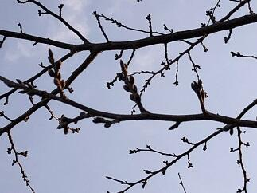
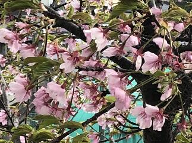
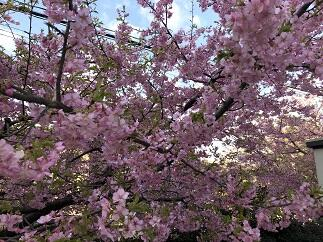
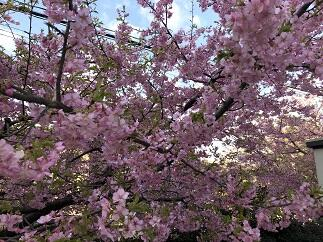

文字
背景
行間


校長花ごよみ
平成31年度SSH指定校の内定について
昨日、文部科学省から平成31年度スーパーサイエンスハイスクール（SSH）指定校の内定について報道発表がありました。1つには、SSHの平成31年度基礎枠の指定校として本校が内定されました。これまで、多くのご指導ご助言をいただいたすべての方々にお礼申しあげます。第1期の5年間と今年度の経過措置１年間で培ってきた研究実績をさらに発展・普及させるためにこの1年間をかけて全校体制で準備してきた計画を来年度から指定を受けて実施できる喜びとともに、責任の重さに身が引き締まる思いです。さらに、今回の指定においては、平成31年度科学技術人材育成重点枠（高大接続枠）に、千葉県立船橋高等学校が幹事校、他の県内の本校を含めた県立SSH４校が参画校として、千葉大学を接続大学としたコンソーシアムが内定されました。本校においては、いずれの事業においても、将来の国際的な科学技術人材を育成するために本校だけでなく県内で学ぶ子どもたちに広く成果を普及できるよう関係機関と連携しながら、すべては、子どもたちのために頑張っていきたいと思います。これからも皆様のご支援ご協力をよろしくお願いいたします。
桜のある風景７
ここ数日の天候を表す言葉としては、「花冷え」、「花曇り」といった季語が最もあってはまっている気がします。その影響か桜の開花状況も少し緩やかになった気がしています。今日は、正門付近の状況を中心にお伝えします。正門手前（写真上段左）道路に面した木々（写真上段中央）は、まだ二分咲きといった程度。正門を入ってすぐの古木（写真上段右）は三分咲き程度です。

 周辺の状況として学思館の周りの木々（写真下段左、中央）や駐輪場周辺の木々（写真下段右）も同様の状況です。
周辺の状況として学思館の周りの木々（写真下段左、中央）や駐輪場周辺の木々（写真下段右）も同様の状況です。
周辺の状況として学思館の周りの木々（写真下段左、中央）や駐輪場周辺の木々（写真下段右）も同様の状況です。 桜のある風景６
本校の桜（ソメイヨシノ等）の今日の状況をお届けします。やはり場所により、木の状況によりかなり違いが見られます。
 駐輪場脇の東側斜面の上にある桜は、開花したものや明日にでも開花するものが多い状況です。（写真上段左、中央）
駐輪場脇の東側斜面の上にある桜は、開花したものや明日にでも開花するものが多い状況です。（写真上段左、中央）

 道路に面した南側の木々は二分から三分咲き（写真上段右 地域交流棟脇）（写真下段左 南側テニスコート脇）,野球場脇の通用門近くの桜は五分咲き（写真下段中央）、中庭の桜の古木は二分咲き程度です。（写真下段右）
道路に面した南側の木々は二分から三分咲き（写真上段右 地域交流棟脇）（写真下段左 南側テニスコート脇）,野球場脇の通用門近くの桜は五分咲き（写真下段中央）、中庭の桜の古木は二分咲き程度です。（写真下段右）
駐輪場脇の東側斜面の上にある桜は、開花したものや明日にでも開花するものが多い状況です。（写真上段左、中央）道路に面した南側の木々は二分から三分咲き（写真上段右 地域交流棟脇）（写真下段左 南側テニスコート脇）,野球場脇の通用門近くの桜は五分咲き（写真下段中央）、中庭の桜の古木は二分咲き程度です。（写真下段右） 桜のある風景５
今日はこれまでにご紹介した桜の咲いている場所をお教えしましょう。


 １で紹介した河津桜は学思館の脇の木です。外の道路からもよく見える木です。(写真上段左)
１で紹介した河津桜は学思館の脇の木です。外の道路からもよく見える木です。(写真上段左)
２で紹介した寒桜はプールの奥、野球場の得点板の奥にある木です。（写真上段右）
３で紹介した河津桜は、第2体育館脇で弓道場の上の斜面の木です。（写真下段左）
４で紹介したシナミザクラは、記念館の脇にある木です。（写真下段右）
お立ち寄りの際によろしければご覧ください。
１で紹介した河津桜は学思館の脇の木です。外の道路からもよく見える木です。(写真上段左)２で紹介した寒桜はプールの奥、野球場の得点板の奥にある木です。（写真上段右）
３で紹介した河津桜は、第2体育館脇で弓道場の上の斜面の木です。（写真下段左）
４で紹介したシナミザクラは、記念館の脇にある木です。（写真下段右）
お立ち寄りの際によろしければご覧ください。
桜のある風景４

 今日の桜情報は、まずは、ソメイヨシノの様子からご報告しますと、写真ではわかりずらいですが蕾（写真左）が緑色から濃いピンク色になってきました。蕾の色がうすいピンク色になるといよいよ開花です。また、別の場所にあるシナミザクラ（写真中央、右）も咲き始めました。
今日の桜情報は、まずは、ソメイヨシノの様子からご報告しますと、写真ではわかりずらいですが蕾（写真左）が緑色から濃いピンク色になってきました。蕾の色がうすいピンク色になるといよいよ開花です。また、別の場所にあるシナミザクラ（写真中央、右）も咲き始めました。
今日の桜情報は、まずは、ソメイヨシノの様子からご報告しますと、写真ではわかりずらいですが蕾（写真左）が緑色から濃いピンク色になってきました。蕾の色がうすいピンク色になるといよいよ開花です。また、別の場所にあるシナミザクラ（写真中央、右）も咲き始めました。 3.14159 26535 89793 23846 …
今日3月14日は、多くの国で「円周率の日」とされています。
3.14159 26535 89793 23846 26433 83279 50288 …のその最初の3桁の並びに合わせて制定されています。他に、円周率近似値の日（7月22日、12月21日（閏年は12月20日）など）があります。円周率は円の直径に対する円周の比として定義される数学定数です。もちろん数学だけでなく科学の様々な分野において重要な数学定数です。表記は π で表されますが、これはギリシア語の円周を表す言葉の περίμετρος（ペリメトロス）の頭文字からとったものです。
円周率は、無理数であり、その小数展開は循環しない小数であり、合わせて、どんな有理係数の代数方程式の解ともならない超越数でもあります。数学的にとても魅力的な数です。さて、その円周率を必要な精度まで求めるのには、いろいろな方法があります。アルキメデスの方法として知られているものは、円周が、内接する正ｎ角形の周の長さより長く外接する正ｎ角形の周の長さよりは短いことを利用して円周の取り得る値を挟み込む方法です。2003年東京大学の前期入試の理系の第6問で「円周率が3.05より大きいことを証明せよ」という問題が出たのを思い出します。また、逆正接関数の区分求積法やべき級数展開を用いる方法や派生してマチンの公式など多くの公式が発見されています。いずれにしてもこんな日に円周率について興味を持って調べてみるのはいかがですか。
3.14159 26535 89793 23846 26433 83279 50288 …のその最初の3桁の並びに合わせて制定されています。他に、円周率近似値の日（7月22日、12月21日（閏年は12月20日）など）があります。円周率は円の直径に対する円周の比として定義される数学定数です。もちろん数学だけでなく科学の様々な分野において重要な数学定数です。表記は π で表されますが、これはギリシア語の円周を表す言葉の περίμετρος（ペリメトロス）の頭文字からとったものです。
円周率は、無理数であり、その小数展開は循環しない小数であり、合わせて、どんな有理係数の代数方程式の解ともならない超越数でもあります。数学的にとても魅力的な数です。さて、その円周率を必要な精度まで求めるのには、いろいろな方法があります。アルキメデスの方法として知られているものは、円周が、内接する正ｎ角形の周の長さより長く外接する正ｎ角形の周の長さよりは短いことを利用して円周の取り得る値を挟み込む方法です。2003年東京大学の前期入試の理系の第6問で「円周率が3.05より大きいことを証明せよ」という問題が出たのを思い出します。また、逆正接関数の区分求積法やべき級数展開を用いる方法や派生してマチンの公式など多くの公式が発見されています。いずれにしてもこんな日に円周率について興味を持って調べてみるのはいかがですか。
桜のある風景３

 校内にある多くの桜は、同じ種類でも、木が育った場所や環境で咲く時期が、かなりずれます。今日ご紹介する桜は、風景１でご紹介した河津桜よりは日当たりが、良い場所で咲いているので、葉がかなり目立っています。なお、同じ環境にある本校のソメイヨシノの蕾も膨らみ始めた状態です。このソメイヨシノの桜の開花予想については、「2月1から毎日の最高気温を足していき、合計して600度になったときに桜が開花する」と600度の法則があると言われています。であるとすると昨日までに500度前後なので、これから12から14度くらいの平均でいけば７，８日後くらいには開花するのではないかと思われます。最新の開花予想と合わせて観察していきたいと思います。
校内にある多くの桜は、同じ種類でも、木が育った場所や環境で咲く時期が、かなりずれます。今日ご紹介する桜は、風景１でご紹介した河津桜よりは日当たりが、良い場所で咲いているので、葉がかなり目立っています。なお、同じ環境にある本校のソメイヨシノの蕾も膨らみ始めた状態です。このソメイヨシノの桜の開花予想については、「2月1から毎日の最高気温を足していき、合計して600度になったときに桜が開花する」と600度の法則があると言われています。であるとすると昨日までに500度前後なので、これから12から14度くらいの平均でいけば７，８日後くらいには開花するのではないかと思われます。最新の開花予想と合わせて観察していきたいと思います。
校内にある多くの桜は、同じ種類でも、木が育った場所や環境で咲く時期が、かなりずれます。今日ご紹介する桜は、風景１でご紹介した河津桜よりは日当たりが、良い場所で咲いているので、葉がかなり目立っています。なお、同じ環境にある本校のソメイヨシノの蕾も膨らみ始めた状態です。このソメイヨシノの桜の開花予想については、「2月1から毎日の最高気温を足していき、合計して600度になったときに桜が開花する」と600度の法則があると言われています。であるとすると昨日までに500度前後なので、これから12から14度くらいの平均でいけば７，８日後くらいには開花するのではないかと思われます。最新の開花予想と合わせて観察していきたいと思います。 桜のある風景２


 今日は、種類が特定できませんが、たぶん寒桜かなと思われる桜をご紹介します。
今日は、種類が特定できませんが、たぶん寒桜かなと思われる桜をご紹介します。 桜のある風景１

 桜の開花が佐倉高校でもちらほらと見られるようになってきました。桜といってもそれぞれ咲く時期や咲く場所、色彩や咲き方がいろいろであり、それぞれに趣があります。今年は例年に比べ桜の開花が早いとのこと。これから、何回か校内の桜の様子をお届けしていきたいと思います。今回は校内の河津桜をご紹介します。
桜の開花が佐倉高校でもちらほらと見られるようになってきました。桜といってもそれぞれ咲く時期や咲く場所、色彩や咲き方がいろいろであり、それぞれに趣があります。今年は例年に比べ桜の開花が早いとのこと。これから、何回か校内の桜の様子をお届けしていきたいと思います。今回は校内の河津桜をご紹介します。 受検生の皆さんお疲れさまでした。
受検生の皆さん検査お疲れ様でした。入学許可候補者の発表は3月6日（水）の午前9時からとなります。


千葉県公立高等学校後期入学者選抜受検生の皆さんへ
本日2月28日（木）は千葉県公立高等学校後期入学者選抜検査が行われます。佐倉高校付近では、7:00時点で天候は小雨、電車は平常運転を行っています。受検生の皆さんは気を付けてお越しください。


千葉県公立高等学校後期入学者選抜で佐倉高校を志願する皆様へ
今日2月22日は、千葉県公立高等学校後期入学者選抜の志願受付日です。本日の受付時間は午後4時30分までとなっています。受付場所は、地域交流施設（写真右）となっています。正門（写真左）を入ってまっすぐ進むと案内板がありますので（写真中央）そこを右手に進んで地域交流施設へ進んでください。気を付けてお越しください。


佐倉高校志願者の皆さんへ（2月4日）

 今日は、千葉県公立高等学校前期入学者選抜の志願受付の第2日です。本日の受付時間は午後4時までとなっています。受付場所は、記念館（写真右）となっています。正門（写真中央）を入ってまっすぐ進むと記念館の屋根が左手上方に見えます（写真右）。気を付けてお越しください。
今日は、千葉県公立高等学校前期入学者選抜の志願受付の第2日です。本日の受付時間は午後4時までとなっています。受付場所は、記念館（写真右）となっています。正門（写真中央）を入ってまっすぐ進むと記念館の屋根が左手上方に見えます（写真右）。気を付けてお越しください。 立春大吉 春一番？
今日は、二十四節気の第一「立春」です。朝から南風が強く昨日より15℃以上気温が上昇しています。関東の「春一番」は、2月4日頃の「立春」から3月21日頃の「春分」までの間に、①日本海で低気圧が発達し、②初めて8メートル以上の南よりの風が吹き、③気温が前日より高くなる現象のことです。となると、もしかしたら、今までで一番早い「春一番」になるかもしれませんね。（ちなみに金沢地方気象台の発表では北陸地方では昨年より10日早く、今日「春一番」が吹いたそうです。）
節分
 今日は二十四節気の第24番目「大寒」の最終日です。明日（2月4日）から二十四節気の第1番目「立春」です。つまり暦の上では、今日は季節が冬から春に移り変わるときを表す「節分」です。
今日は二十四節気の第24番目「大寒」の最終日です。明日（2月4日）から二十四節気の第1番目「立春」です。つまり暦の上では、今日は季節が冬から春に移り変わるときを表す「節分」です。節分は、元来，季節の移り変るときをさしていますので，この立春のほかに立夏、立秋、立冬のそれぞれの前日を指していたそうです。今は一般的に立春の前日だけを言います。春は年のはじまりであり、季節の変わり目には邪気が生じるという考えから、節分に民間では柊鰯（鬼が臭いものととがったものを嫌うと考えられていたので、柊の枝の先に焼いた鰯の頭を刺してもの。）を門口にかざし、日暮れに「豆まき」をして厄払いと招福を行う習慣があり、特に、「豆まき」をされる家が多いのではないでしょうか。
また、節分に「恵方」（歳徳神がいらっしゃる方角）を向いて無言で食すると縁起が良いという「恵方巻き」でおなじみの「恵方」は今年の干支が己亥（つちのとい）なので東北東と真東の間の方位になります。わたしの家から佐倉高校はちょうどこの方向なのでとっても良い感じがしています。明日からもみんなで良い年にしていきたいですね。
佐倉高校志願者の皆さんへ（2月1日）

 ２月１日、４日と千葉県公立高等学校前期入学者選抜の志願受付を行います。本校を志願される皆さんは正門(写真左)を入られてまっすぐに進むと看板（写真中央）がありますのでそれを右手に進んで地域交流施設（写真右）へお越しください。あわてず気を付けてお越しください。
２月１日、４日と千葉県公立高等学校前期入学者選抜の志願受付を行います。本校を志願される皆さんは正門(写真左)を入られてまっすぐに進むと看板（写真中央）がありますのでそれを右手に進んで地域交流施設（写真右）へお越しください。あわてず気を付けてお越しください。 如月朔日朝一でうれしかったこと。

 感覚としてちょっと前に年が明けたと思っていたらもう2月です。昨夜からは今年はじめての雪が降り積雪となりました。今日は千葉県公立高等学校前期入学者選抜の志願者受付の日です。地域交流施設で受付をおこないますが、志願者のために教職員・生徒が朝早くから雪かきをしてくれました。今日は朝からとっても嬉しく本校に来てよかったと思うと同時に、本校の教職員・生徒さんたちを誇りに思いました。
感覚としてちょっと前に年が明けたと思っていたらもう2月です。昨夜からは今年はじめての雪が降り積雪となりました。今日は千葉県公立高等学校前期入学者選抜の志願者受付の日です。地域交流施設で受付をおこないますが、志願者のために教職員・生徒が朝早くから雪かきをしてくれました。今日は朝からとっても嬉しく本校に来てよかったと思うと同時に、本校の教職員・生徒さんたちを誇りに思いました。 雪景色20190201


 今年初めての雪景色をご堪能ください。写真１段目は正門付近から、2段目は東郷池、3段目は記念館の様子です。
今年初めての雪景色をご堪能ください。写真１段目は正門付近から、2段目は東郷池、3段目は記念館の様子です。 千葉県高等学校ラグビーフットボール大会・新人大会準々決勝
投稿日時 : 2019/01/19
 sakura-h
sakura-h

本日１月１９日（土）は３年生にとってとても大切な大学入試センター試験の第１日目でした。風はかなり吹いていたものの晴天で全国的にもまずまずの天候だったようです。受験生の皆さんが十分に力を発揮されていることを祈ります。
さて、天台スポーツセンターにおいては千葉県高等学校ラグビーフットボール大会・新人大会準々決勝が行われました。佐倉高校は、八千代松陰高校と対戦しました。前半は互いに１トライづつ決め、前半の得点は５－５のまさに一進一退の互角の戦いでした。後半に入ると自陣内での攻防が多くなり八千代松陰高校に２つのトライとその後のコンバージョンゴールも決められ１４点差で残念ながら敗れてしまいましたが、次へ繋がる良い試合だったと思います。応援に来ていただいた保護者や佐倉高校OBの方々、いつも応援やご支援ありがとうございます。今後ともよろしくお願いたします。
防災とボランティアの日
24年前の今日、1995年1月17日午前5時46分に淡路島北端を震源とする兵庫県南部地震が発生しました。この阪神・淡路大震災では、学生を中心としたボランティア活動が活発化し、「日本のボランティア元年」と言われました。これをきっかけに、ボランティア活動への認識を深め、災害への備えの充実強化を図る目的で、「防災とボランティアの日」の制定が1995年12月の閣議で決定され、翌1996年から実施されました。また、さらに関連して今日は、「おむすびの日」でもあります。なぜ今日がおむすびの日として選ばれたのかというと、阪神大震災のその当時、混乱する現場でボランティアの方々が被災した方々に支援として、まずは食料だろうと、それもすぐに食べられて温かみが伝わるものは何が良いか考えられ、炊き出しでは、おむすびが提供されたそうです。現在のようにボランティア活動の受け入れ体制も何も無かった状況でボランティアの方々が、思いやりの心と現場で困っている方々に何が必要か想像力を働かせながら献身的に働かれたことにより未曾有の危機的な状況を乗り越えてきたのでしょう。それにより多くの被災者が励まされたことから、いつまでもこの善意を忘れないため、1月17日を記念日としたそうです。人はどんな状況でも誰かのために動いたときに持てる力を総合的に発揮してすばらしい結果を出すことができるんですね。
災害は、もちろん無いにこしたことはありませんが、過去のいろいろな教訓から学びそれらを生かせるように、常に備えをしておくことが重要です。そして、普段どおりの生活をできることに感謝を忘れないことが最も重要だと思います。
災害は、もちろん無いにこしたことはありませんが、過去のいろいろな教訓から学びそれらを生かせるように、常に備えをしておくことが重要です。そして、普段どおりの生活をできることに感謝を忘れないことが最も重要だと思います。